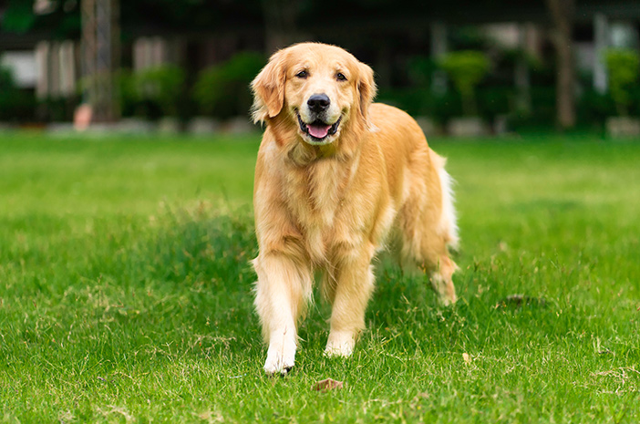
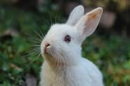
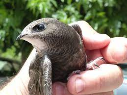
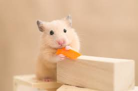

Selamat datang di Petzoona!
Kami adalah sebuah shelter yang dengan penuh dedikasi menyediakan tempat penampungan, perawatan, dan perlindungan bagi hewan-hewan terlantar yang membutuhkan. Dengan mengutamakan kasih sayang dan perhatian, kami berkomitmen untuk memberikan mereka kesempatan kedua yang layak dan menciptakan lingkungan yang aman serta nyaman bagi mereka. Di Petzoona, kami percaya bahwa setiap hewan memiliki nilai dan hak untuk hidup dengan martabat, kebahagiaan, dan kesejahteraan. Melalui upaya kolaboratif dan dukungan komunitas, kami berupaya mengurangi jumlah hewan terlantar di jalanan dan memberikan mereka harapan baru. Bersama-sama, mari kita berkontribusi dalam memberikan cinta, perawatan, dan rumah yang hangat bagi hewan-hewan terlantar ini.
Hewan Terlantar yang Tersedia
-

Nama: Kucing
Umur: 2 tahun
-

Nama: Anjing
Umur: 3 tahun
-

Nama: Kelinci
Umur: 1 tahun
-

Nama: Burung
Umur: 1 tahun
-

Nama: Hamster
Umur: 6 bulan
Mengapa Harus Mengadopsi?
Adopsi hewan terlantar sangat penting karena memberikan rumah yang aman dan kasih sayang bagi hewan-hewan yang membutuhkan. Melalui adopsi, kita dapat memberikan mereka kesempatan untuk mendapatkan perawatan yang mereka butuhkan serta lingkungan yang penuh perhatian. Selain itu, adopsi juga berperan dalam mengurangi jumlah hewan terlantar yang berkeliaran di jalanan, membantu mengatasi masalah populasi hewan yang tidak terkendali. Dalam proses adopsi, kita juga memberikan dukungan kepada shelter dan organisasi yang berupaya menyelamatkan dan merawat hewan-hewan terlantar, yang sangat bergantung pada dukungan finansial dan pengadopsian hewan untuk menjalankan misi mereka. Dengan mengadopsi hewan terlantar, kita tidak hanya memberikan mereka kesempatan kedua untuk mendapatkan kehidupan yang lebih baik, tetapi juga turut berkontribusi dalam menciptakan perubahan positif bagi masyarakat dan dunia hewan secara keseluruhan.
Testimoni

Jane Smith
"Petzoona adalah tempat yang luar biasa untuk mengadopsi hewan peliharaan. Saya sangat terkesan dengan profesionalisme dan kepedulian mereka terhadap hewan-hewan terlantar."